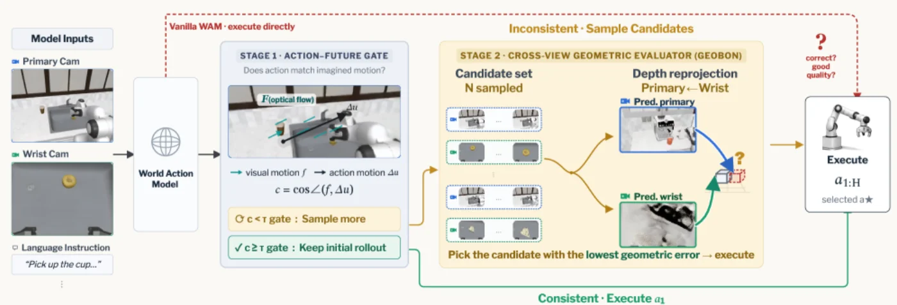
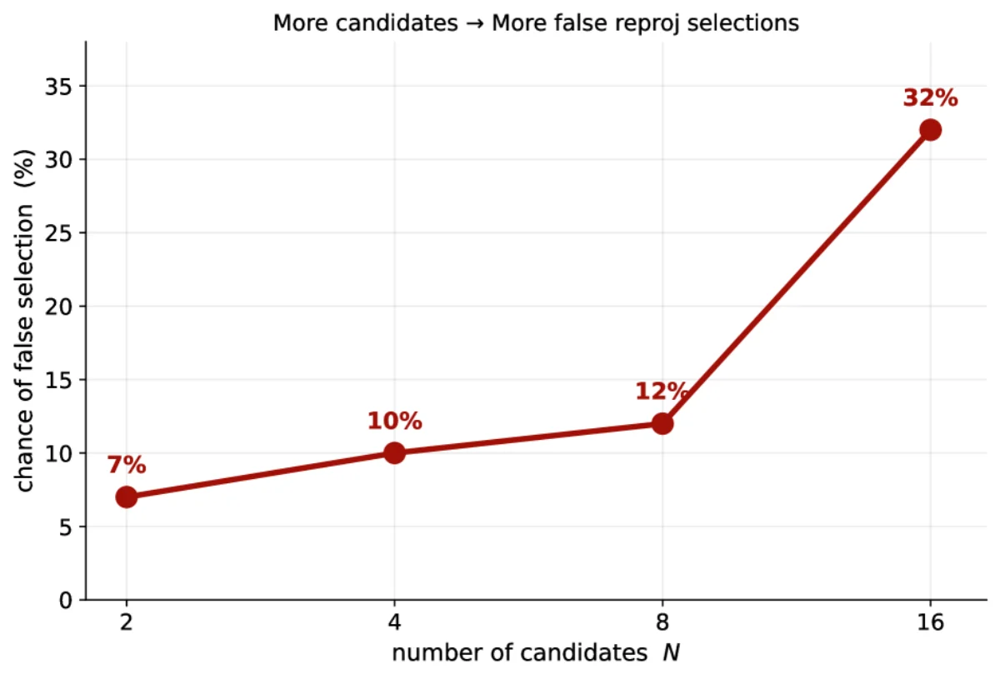
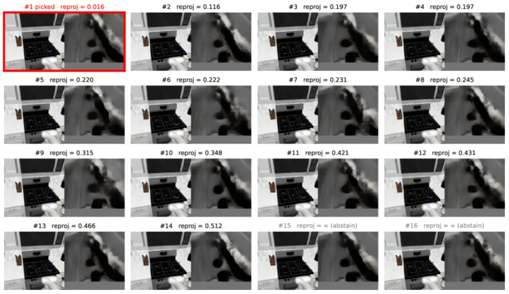

机器人控制的 test-time scaling 有个特殊之处：必须在执行动作之前就判断额外算力值不值得花。World Action Model（WAM）天然给出了这个判断依据——每次 rollout 同时吐出一段 action chunk 和它预测的未来观测。本文提出 Gated GeoBoN：一个训练无关的选择式 test-time scaling 框架，用冻结的几何基础模型给候选 rollout 打「跨视角深度重投影一致性」的分，并只在初始 rollout 看起来内部不一致时才触发额外采样。
Test-time scaling 在语言/推理模型上已经很成熟：多花算力（如 Best-of-N 采样 + 打分选择）就能换来更好的结果。但机器人控制是闭环、实时的——你不能把每一步都放大到 N 个候选再慢慢挑，既拖慢频率、又不是每一步都值得。真正的问题是：在真正下发动作之前，怎么零成本地判断这一步该不该多花算力，以及多个候选里哪个更靠谱？
“robot control requires deciding whether extra compute is useful before executing an action. World Action Models (WAMs) make this decision natural: each rollout exposes both an action chunk and predicted future observations.”
作者的关键洞察是：WAM 的 rollout 除了动作，还会预测这段动作将导致的未来画面。这就给了一个免费的自检信号——预测的未来是否在几何上/运动上自洽，可以在不知道任务是否成功、不用任何 task label 的前提下，反过来评估这次决策靠不靠谱。

整套方法完全训练无关（training-free），分两层：先用 GeoBoN 做固定预算的 Best-of-N 几何选择；再套一层轻量的 action–future consistency gate，把 GeoBoN 从「always-on」变成「按需触发」，即 Gated GeoBoN。
WAM 采样出 N 个 rollout，每个都带有预测的未来多视角观测。GeoBoN 用一个冻结的几何基础模型 VGGT-Ω 给每个候选打分：把 wrist-view 的 3D 点投影进 primary camera 视角，再和该视角直接预测的深度做对比，累计对数深度比的绝对偏差作为「不一致性」：
edepth(τi) = (1/|Ωi|) Σ | log( dproj(p) / dvggt(p) ) | ，在有效像素上求平均。
不一致性越低，说明预测的未来在跨视角几何上越自洽，越可能对应一次靠谱的动作。GeoBoN 直接选不一致性最低的候选——整个打分无需任务标签。
门控用光流校验「动作」与「预测未来画面」是否一致：在 primary-view 的当前帧与预测帧之间算 dense optical flow，同时用 forward kinematics 把末端执行器位置投影到画面，得到「动作应产生的视觉运动」。对每条手臂计算二者的 cosine agreement：
“the cosine agreement between predicted visual motion and projected action motion.”
当 cosine agreement cl,r < τgate（阈值 −0.2）时判定为「内部不一致」，才触发 GeoBoN 采样；实现上还配有 1 cm 的 idle 阈值和投影轨迹周围 30-pixel 的 capsule 区域来过滤噪声。绝大多数决策点的初始 rollout 已足够可靠，因此门控把额外算力精准地集中在少数「可疑」步上。
在 RoboCasa、LIBERO Long、RoboTwin 2.0 三个 benchmark 上、跨 五个 benchmark–backbone 组合评测，backbone 覆盖 Cosmos Policy、X-WAM、LingBotVA、Motus。指标为任务成功率（%），主设置为固定预算 N=8，括号内为 95% 置信区间。
| Benchmark · Backbone | Baseline | GeoBoN (N=8) | Δ (95% CI) |
|---|---|---|---|
| RoboCasa · Cosmos Policy | 66.3% | 68.4% | +2.1 [+0.6, +7.3] |
| RoboCasa · X-WAM | 80.8% | 82.5% | +1.7 [+0.3, +2.6] |
| LIBERO Long · Cosmos Policy | 97.5% | 99.3% | +1.8 |
| LIBERO Long · LingBotVA | 97.2% | 98.3% | +1.1 |
| RoboTwin 2.0 · Motus | 87.8% | 89.9% | +2.1 [+0.2, +3.4] |
原文原话：fixed-budget GeoBoN “improves N=8 task success in every setting”。
“Gated GeoBoN recovers on average 74.8% of the always-on success gain while triggering additional sampling on only 26.2% of decision points.”
即在 Nmax=8 下，门控只在约四分之一的决策点动用额外采样，却能保留 always-on 版本近四分之三的收益——算力代价与效果之间取得了很好的折中。
离线诊断（error recovery ER）显示 cross-view reprojection 是一个不需任务标签的强选择器：GeoBoN 在 4 个离线设置中的 3 个取得最好的 error recovery，并且是唯一在所有设置下都能把在线闭环成功率提升到 baseline 之上的选择器。与 Cosmos Policy 自带的 value head 相比（同样候选预算、只换选择器），GeoBoN 在 RoboCasa 上高出 +1.3 ~ +2.3 点、在 LIBERO Long 上高出 +0.7 ~ +1.3 点。
作者识别出的核心失败模式：候选池越大，Best-of-N 越有机会挑中一个 reprojection error 异常低的虚假离群候选。误选率随 N 上升——“The false low-score selection rate increases from 7% at N=2 to 12% at N=8 and 32% at N=16.” 这解释了为何性能会在 N=16 附近饱和甚至下降（evaluator noise + multiple-comparisons 效应），也是为什么「中等预算 + 选择式触发」优于「always-on 大规模采样」。

选择器优化的是「跨视角深度一致性」这一代理信号，它与真实任务成功之间存在 gap——当候选之间差异极小时，打分噪声可能主导选择。

方法建立在冻结的 VGGT-Ω 几何基础模型、以及 primary/wrist 多视角观测和相机外参之上；门控还依赖 optical flow 与 forward kinematics 投影。当几何模型预测退化、视角/标定缺失或光流不可靠时，打分与门控信号的质量都会随之下降。